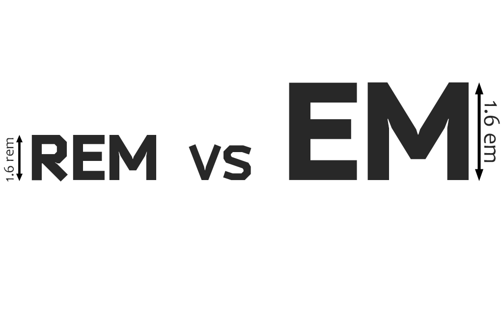

by Artem Trgtsin
<div class="container"><p class="first">First Paragraph using EM's</p><p class="second">Second Paragraph using REM's</p></div>
CSS
html { font-size: 16px;}.container { font-size: 1.4em;}p.first { font-size: 1.4em;}p.second { font-size: 1.4rem;}
First Paragraph using EM's
Second Paragraph using REM's
html { font-size: 62.5%;}.font-size(@sizeValue) {@remValue: @sizeValue;@pxValue: (@sizeValue * 10);font-size: ~"@{pxValue}px";font-size: ~"@{remValue}rem";}
p {.font-size(13);}
html { font-size: 62.5%;}.fontName (@size) {@remValue: @size;@pxValue: (@size * 10);font: ~"@{pxValue}px" fontName, sans-serif;font-size: ~"@{pxValue}px";font: ~"@{remValue}rem" fontName, sans-serif;}
p {.fontName(18);}p {font: 18px fontName, sans-serif;font-size: 18px;font: 1.8rem fontName, sans-serif;}
.margin-bottom (@margin) {@pxValue: (@margin * 10);margin-bottom: ~"@{pxValue}px";margin-bottom: ~"@{margin}rem";}
@media only screen and (min-width: 1900px) {html, body {font-size: 80%;}}